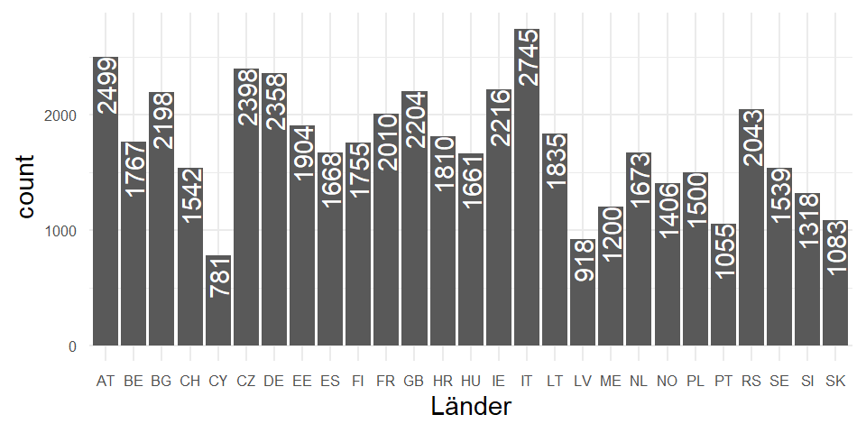
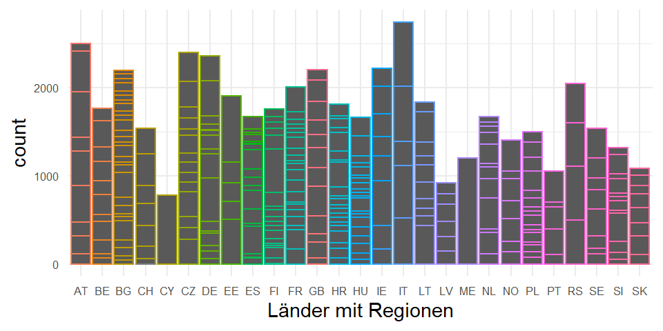
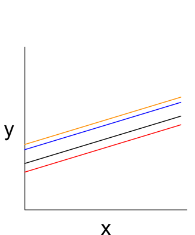
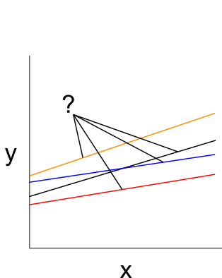

1. Was ist eine Mehrebenenregression?
Themenüberblick
Kommen wir nun zum ersten Teil der Videoserie mit dem Thema „Was ist eine Mehrebenenregression”?
Das Video finden Sie hier.
Lernziele für Teil 1 sind…
- dass Sie die unterschiedlichen Bezeichnungen der Mehrebenenregression kennen.
- dass Sie das Grundprinzip der Mehrebenenregression erläutern können.
- dass Sie wissen, welche unterschiedlichen Varianten der Mehrebenenregression es gibt.
- dass Sie entscheiden können, für welche Fragestellung welche Variante der Mehrebenenregression geeignet ist.
Ein Modell mit vielen Namen
HLM, MLM und MEA, Mixed Effects, LMM und MLA
In der Literatur haben sich eine Vielzahl von Bezeichnungen für die Mehrebenenregression etabliert. Der Grund ist, dass die Mehrebenenregression in verschiedenen Disziplinen genutzt wird und sich dort jeweils bestimmte Bezeichnungen durchgesetzt haben.
In statistischer Terminologie handelt es sich bei Mehrebenenregressionen um sogenannte Mixed Effects Modelle.
Wenn die abhängige Variable metrisch ist, nennt man die Modelle ganz allgemein Linear Mixed Effects Models (oder abgekürzt LMM). Und wenn stattdessen binäre abhängige Variablen vorliegen oder die abhängige Variable anderen Verteilungen folgt (z.B. Poisson-Verteilung für Zählvariablen), dann werden diese Modelle Generalized Linear Mixed Effects Models genannt, oder kurz: GLMM. Die Modelle werden deshalb Mixed Effects genannt, weil sie gleichzeitig fixierte Effekte und variierende Effekte schätzen. Im Englischen heißen diese dann Fixed Effects und Random Effects. Es finden sich in der Literatur daher auch die Bezeichnungen Fixed Effects Modelle (FE Modelle) oder Random-Effects Models (RE-Modelle). Diese Terminologie ist dabei eher in der Statistik oder der Ökonometrie in Gebrauch.
… was es mit diesen fixierten und variierenden Effekten auf sich hat, sehen wir später.
In der Soziologie und der Politikwissenschaft spricht man meist von hierarchischen Modellen (Hierachical Linear Models HLM) oder Mehrebenenmodelle (Multilevel Models, MLM), Multilevel Analysis, MLA), Mehrebenenanalyse (MEA), oder eben der Mehrebenenregression.
Schon nach wenigen Minuten ist nun Ihr Statistik Wortschatz um einige beeindruckende Abkürzungen und Begriffe reicher. Sie müssen diese Begriffe nicht alle nutzen, aber Sie sollten erkennen, dass sich dahinter immer dasselbe Verfahren verbirgt.
Lassen Sie uns jetzt den Begriff der Mehrebenenregression mit Inhalt füllen.
Warum und wozu eine Mehrebenenregression
In der empirisch-analytischen Wissenschaft haben wir die vereinfachende Vorstellung, dass es eine Art datengenerierenden Prozess gibt (im Englischen: data generating process, oder kurz DGP). Das ist die Vorstellung, dass die Phänomene, oder besser gesagt, die Daten, die wir zu diesen Phänomenen messen (also z.B. das Einkommen einer Person, oder ihr politisches Vertrauen usw.) das Ende oder Resultat einer komplexen Kette an Ursache/Wirkungszusammenhängen sind.
Hier ein sehr simples Beispiel:
Die Geburt in einem reichen demokratischen Industrieland als Kind wohlhabender Eltern führt zu guter Bildung führt höherem Einkommen führt größerer Zufriedenheit mit der Wirtschaftslage und führt zu einem höheren politischen Vertrauen.
Und man könnte sich noch viele Abzweigungen, Kreuzungen und bedingte Effekte in dieser Kette vorstellen.
Es ist natürlich nur eine Vorstellung und man ist niemals in der Lage diesen DGP tatsächlich vollständig korrekt zu beschreiben. Aber darum geht es nicht. Aber dieses Bild des DGP hilft uns, die Komplixtät der Wirklichkeit handhabbar zu machen
Wir glauben also an einen Ablauf an Mechanismen, der dazu führt, dass unsere Befragten den einen oder anderen Wert auf der Y-Variable - der abhängigen Variable erhalten.
Und unsere Theorien versuchen diesen Ablauf, diesen DGP zu beschreiben. Nicht alles, aber den für eine spezifische Forschungsfrage relevanten Ausschnitt. Die Theorie liefert uns nämlich die Annahmen über die unabhängigen Variablen und die Mechanismen, die sie verbinden.
Sie liefern Annahmen darüber, warum eine Befragte den ein oder anderen Wert auf der Y-Variable aufweist.
Mit dem statistischen Modell versuchen wir dann diese Theorie über den datengenerierenden Prozess mathematisch/statistisch auszudrücken.
Kontext und hierarchische Daten
In aller Regel laufen solche datengenerierende Prozesse aber kontextabhängig ab. Die Mechanismen die wirken, können je nach Kontext einen stärkeren oder schwächeren Effekt haben, keinen Effekt haben, oder sogar einen umgekehrten Effekt aufweisen.
Der Kontext, das sind alle möglichen Einbettungen, in denen Menschen sich bewegen: Menschen sind Teil von Gruppen, Klassen, Parteien, Orten, Stadtteilen, Ländern und vielem mehr.
Unsere datengenerierenden Prozesse führen also zu einer verschachtelten Struktur der Daten (wir nennen das nested data). Man spricht auch von hierarchischen Daten, oder von einer Mehrebenenstruktur.
Solche Ebenen können neben sozialen Gruppen und Organisationszugehörigkeiten auch räumliche Einheiten sein, oder Erhebungszeitpunkte, oder sogar Experimentalgruppen.
Immer wenn solche hierarchischen Daten vorliegen, ist die Mehrebenenregression das passende statistische Modell, dass den datengenerierenden Prozess am besten abbilden kann.
Technisch spricht man davon, dass es mehrere Ebenen gibt, im englischen Levels. Jede Ebene hat eine bestimmte Anzahl an Fällen (Units).
Wir beschäftigen uns in der Videoserie mit dem einfachen Fall von zwei Ebenen.
- die erste Ebene ist die Individualebene, hier finden wir unsere Befragten. Es ist die unterste Ebene, kurz: L1 für Level 1. Als Index nutzen wir das \(i\).
- die Kontextebene ist die obere Ebene oder L2. Diese Ebene sind die Länder oder allegeminerKlassen bzw. Gruppen. Als Index nutzen wir das \(j\).
Wir haben \(n\) Individuen \(i_{1, ...n}\) auf Ebene 1 geclustert in \(j\) Klassen/Gruppen \(j_{1,...m}\) auf Ebene 2.
Hier ein konkretes Beispiel.
Die Daten stammen aus dem 9. European Social Survey, - kurz ESS - aus dem Jahr 2018.1
Sie benötigen die ESS Daten um in späteren Videos den R Code aus R-Script-Dateien ausführen zu können. Die Daten können Sie über die Webseite des ESS herunterladen:
https://www.europeansocialsurvey.org/
oder direkt über die DOI-Adresse:
https://doi.org/10.21338/NSD-ESS9-2018
Schauen wir mal nur auf die Anzahl der Befragten in den 27 teilnehmenden Ländern.

Hier sehen wir bereits die geclusterte Datenstruktur:
Die Mehrebenenstruktur lässt sich folgendermaßen ausdrücken:
Wir haben \(47086\) Individuen \(i_{1,\dots47086}\) auf Ebene 1 geclustert in \(27\) Ländern \(j_{1,\dots 27}\) auf Ebene 2.
Die Ländervariable ist also die Gruppierungsvariable, in denen die Einheiten der unteren Ebene geclustert sind. Theoretisch lassen sich noch weitere Ebenen einfügen. Das würde dann so aussehen…

Hier sind die Befragten in Regionen (z.B. Bundesländern oder Kantonen) geclustert, die dann wiederum Teil von Ländern (also den Nationalstaaten) sind.
Für die Videoserie bleiben wir aber beim einfachen Beispiel mit zwei Ebenen.
Varianz auf Ebene 2
Dass ihre Daten durch das Vorhandensein einer Gruppierungsvariable eine Mehrebenenstruktur aufweist, ist zwar eine notwendige, aber keine hinreichende Bedingung für eine Mehrebenenregression.
Denn es ist ja nicht zwingend so, dass diese Struktur auch empirisch zu Unterschieden zwischen den Kontexteinheiten führt.
Oder anders gesagt: es genügt nicht, dass strukturell mehrere Ebenen vorhanden sind. Darüber hinaus muss in der abhängigen Variable auch tatsächlich Variation zwischen den Kontexteinheiten bestehen. Nur dann ist eine Mehrebenenregression sinnvoll.
Man sagt auch: Es muss ausreichend Varianz auf Ebene 2 vorhanden sein.
Ob das der Fall ist, lässt sich mit Hilfe der sogenannten Intraklassenkorrelation, kurz \(ICC\) bestimmen.
Wie man das macht, sehen wir im zweiten Teil der Videoserie.
Wenn ausreichend Varianz auf Ebene 2 vorliegt, können wir die Mehrebenenregression nutzen. Vorteil ist, dass wir bessere Schätzungen für die Regressionsparameter erhalten.
Ein weiterer Vorteil ist, dass wir die Wechselwirkungen zwischen den Ebenen explizit im Modell berücksichtigen können und in wenigen Maßzahlen auch kompakt beschreiben können.
Grundidee und Varianten der Mehrebenenregression
Nun, die Grundidee der Mehrebenenregression ist folgende:
Das was wir in den Daten an Variation haben, und das ist ja das, was wir erklären wollen, setzt sich (für den Moment verinfacht) aus zwei Quellen zusammen.
Einmal die Variation die durch Eigenschaften und Merkmale der Individuen entsteht.
Und zum anderen die Variation, die aus Eigenschaften des Kontextes entsteht, die auf alle Individuen gleich wirken, die zum gleichen Kontext gehören. Wir haben also zunächst zwei Varianzkomponenten.
Mit Hilfe der Mehrebenenregression lässt sich ein Modell spezifizieren, dass diese Varianzkomponenten korrekt berücksichtigt.
Starten wir bei einem klassischen OLS Regressionsmodell, hier ein einfaches bivariates Beispiel. Das kennen Sie.
Es gibt ein Intercept und ein Steigungsparameter b.
Aber: Wir berücksichtigen keine Mehrebenenstruktur:
Und hier ein einfaches Mehrebenenmodell:

- Wir können den Intercept zwischen den Kontexteinheiten variieren lassen! Wir können also berücksichtigen, dass es unterschiedliche Durchschnittswerte der abhängigen Variable in den verschiedenen Kontexteinheiten gibt. Varying Intercept Model - weil der Intercept variiert.
- darüber hinaus, können wir auch den Steigungsparameter variieren lassen. Das sehen Sie hier:
Wir können also, erlauben, dass der Zusammenhang zwischen abhängiger Variable und unabhängiger Variable in den Ländern unterschiedlich stark sein kann. Das ennt sich dann Varying Intercept, Varying Slope Model.
Und wir können tatsächlich auch prüfen, ob und wie stark Merkmale auf der Kontextebene dafür verantwortlich sind, dass diese Unterschiede auftreten. Das wäre dann das Modell mit einer Cross-Level Interaction.

Man könnte es auch so formulieren:
Der Intercept variiert zwischen den Kontexteinheiten, nimmt also unterschiedliche Werte an. Und diese Varianz können wir versuchen mit den Prädiktoren auf Ebene 2 zu erklären.
Analog für die variierenden Steigungsparameter: Auch diese Variation ist erklärungsbedürftig. Und wir können ein Modell erstellen, dass versucht diese Variation auf Kontextebene zu erklären.
Die Mehrebenenregression schätzt ein Modell für die Individualebene, aber im Unterschied zur einfachen OLS dürfen aber bestimmte Parameter zwischen den Kontexteinheiten variieren.
Die Mehrebenenregression schätzt aber gleichzeitig ein Modell auf Kontextebene, dass es erlaubt, diese Variation auch systematisch erfassen und ggf. zu erklären.
Jetzt kennen Sie die unterschiedlichen Varianten, wie man Mehrebenenregression spezifizieren kann:
- Varying Intercept Modell
- (Varying Slope Modell) Was in der Praxis nur selten ohne varying Intercept gemacht wird
- Varying Intercept, Varying Slope Modell
- Varying Intercept, Varying Slope Modell mit Cross-Level Interaktion
Wir können also folgende Fragestellungen beantworten:
- Welchen Einfluss haben Prädiktoren auf Ebene 1 an der Varianz auf Ebene 1
- Welchen Einfluss haben Prädiktoren auf Ebene 2 an der Varianz auf Ebene 2
- Unterscheiden sich die Effekte eines Prädiktors der Ebene 1 zwischen Einheiten der Ebene 2
- Können Prädiktoren der Ebene 2 erklären, warum sich Effekte von Prädiktoren der Ebene 1 zwischen den Ebene 2 Einheiten unterscheiden?
Diese Modelle schauen wir uns in Teil 4 und 5 der Videoserie noch einmal genauer an und setzen sie mit R um… Zuvor werden wir uns im nächsten Video Nummer zwei anschauen, wann denn eine Mehrebenenregression genutzt werden sollte.
Damit wären wir am Ende des ersten Videos anfgelangt.
Im folgenden finden Sie noch eine kleine Aufgabe zur Wiederholung, sowie nochmal eine Übersicht über die Lernziele. Ganz am Ende gibt es noch ein paar Literaturhinweise.
Aufgabe zur Wiederholung
- Überlegen Sie sich ein theoretisches ein Beispiel, bei dem der durchschnittliche Wert einer Variable auf Ebene 1 zwischen den Kontexteinheiten variiert.
- Überlegen Sie, welche Determinanten auf der Kontextebene für diese Variation des Mittelwertes verantwortlich sein könnte.
- Überlegen Sie, ob es vielleicht auf Individualebene eine erklärende Variable gibt, deren Wirkung zwischen den Kontexten variiert, die also in den unterschiedlichen Kontexten stärker oder schwächer oder vielleicht gar nicht wirkt?
Lernzielabgleich
Haben Sie alles mitgenommen? Fragen Sie sich selbst, ob Sie die folgenden Lernziele erreicht haben:
- Sie kennen die unterschiedlichen Bezeichnungen der Mehrebenenregression.
- Sie können das Grundprinzip der Mehrebenenregression erläutern.
- Sie wissen, welche unterschiedlichen Varianten der Mehrebenenregression es gibt.
- Sie können entscheiden, für welche Fragestellungen welche Varianten der Mehrebenenregression geeignet sind.
Literatur
Literatur zum Einstieg in die Mehrebenenregression (in aufsteigender Schwierigkeit sortiert):
- Tausendpfund, Markus (2020): Mehrebenenanalyse. In: ebd. (Hrsg.): Fortgeschrittene Analyseverfahren in den Sozialwissenschaften. Grundwissen Politik. Springer VS, Wiesbaden. https://doi.org/10.1007/978-3-658-30237-5_5
- Pötschke, Manuela. (2020). Mehrebenenmodelle. In: Wagemann, Claudius; Goerres, Achim; Siewert, Markus B. (Hrsg.): Handbuch Methoden der Politikwissenschaft. Springer VS, Wiesbaden. https://doi.org/10.1007/978-3-658-16936-7_29
- Gelman, Andrew; Hill, Jennifer (2009): Data-Analysis Using regression and Multilevel/Hierachical Models. Cambridge: Cambridge University Press. Kap. 12 & 13. https://doi.org/10.1017/CBO9780511790942
Fußnoten
ESS Round 9: European Social Survey Round 9 Data (2018). Data file edition 3.1. Sikt - Norwegian Agency for Shared Services in Education and Research, Norway – Data Archive and distributor of ESS data for ESS ERIC. doi:10.21338/NSD-ESS9-2018↩︎